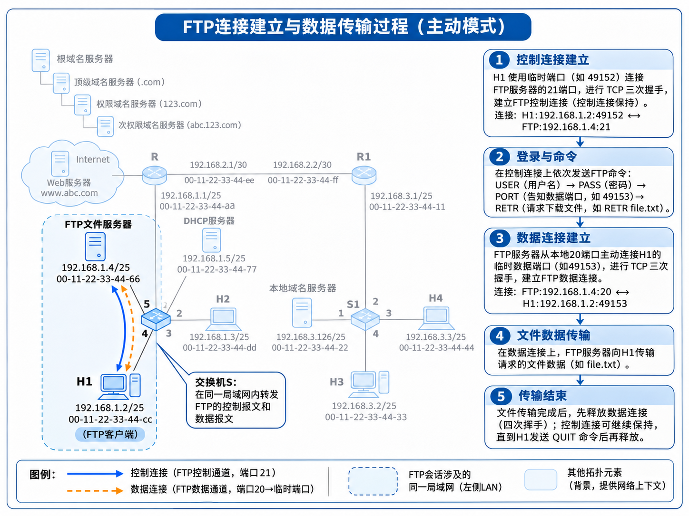
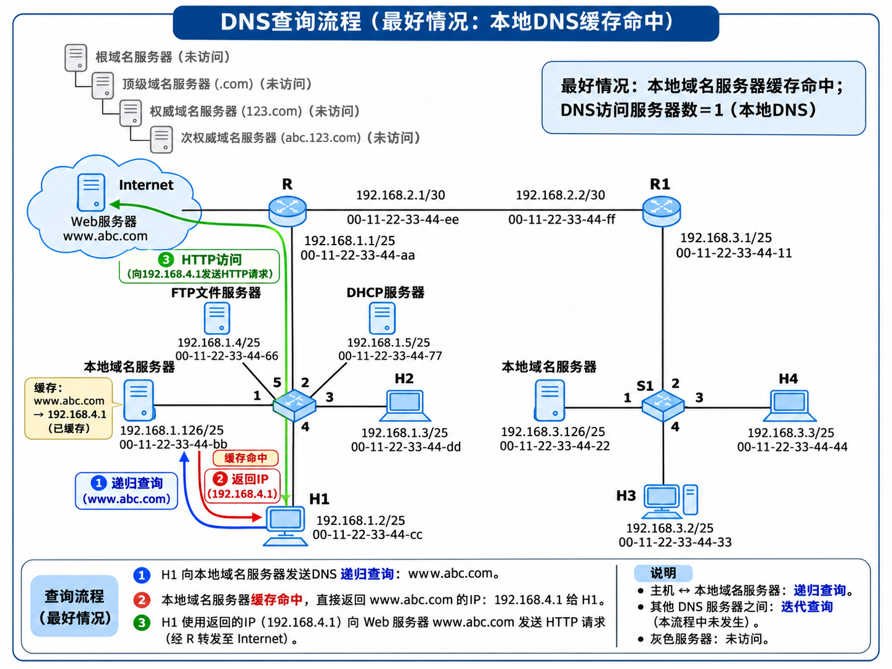
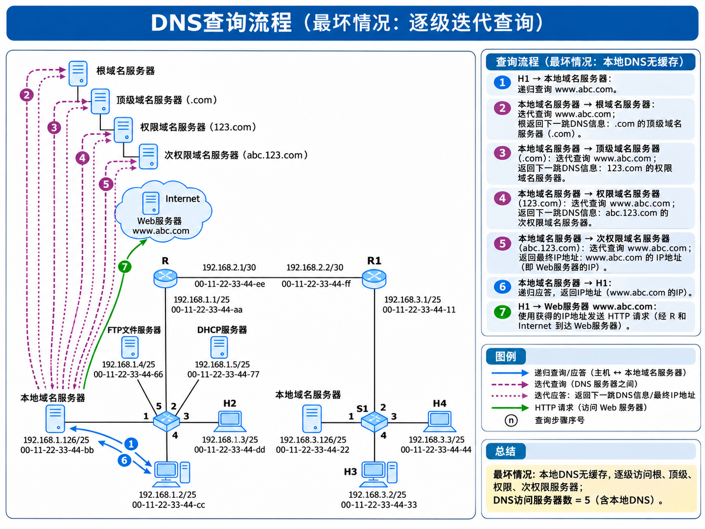

FTP 主动模式：综合拓扑

控制连接：H1→FTP:21；数据连接：FTP:20→H1 临时端口。
FTP 两条连接与三次握手
文件完成后释放数据连接，控制连接可以保留。
连续下载三个文件
一次控制连接 + 三次数据连接。
DNS 域名层次
查询示例：www.abc.123.com。
DNS 最好情况（原图）

本地 DNS 缓存命中：1 次查询，1 RTT；若主机自身缓存命中则 0 次。
DNS 最坏情况（原图）

原图域名不一致：若经过 123.com 与 abc.123.com 两级授权，查询名应为 www.abc.123.com；共5次查询。
递归 + 迭代查询：修正时序
假设各级独立授权，无额外查询或重传。
全部递归查询（教学模型）
现实中根及顶级服务器通常不提供递归服务。
DNS + TCP + HTTP 时序
缓存命中情况下：DNS RTT + 2 个 Web RTT（忽略传输时间）。
常见应用层协议端口
FTP 主动数据连接服务器端口20；RIP UDP 520；BGP TCP 179。